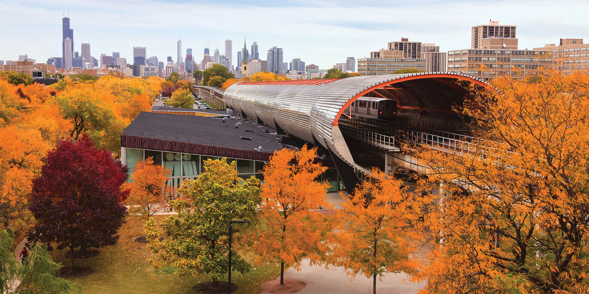
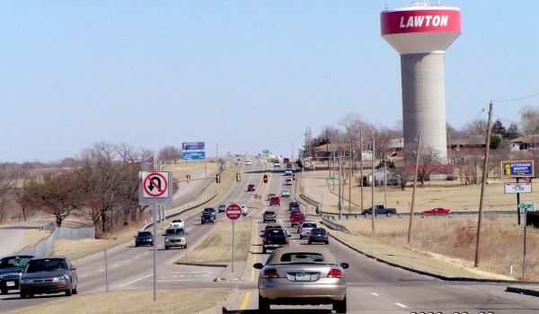
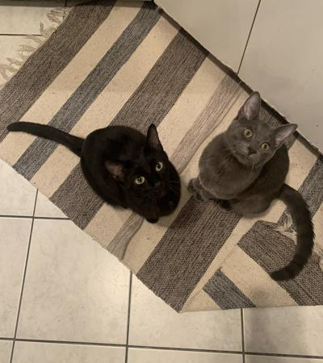
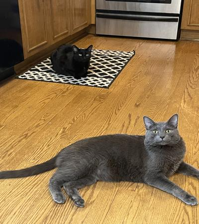

Hi, I'm Shayan! Here's a little bit about my school background:

- I'm a student at Illinois Tech
- My major is Computer Science
- I'll be graduating a semester early with my Bachelors (undecided if I want to do a minor and stay my full 4 years...)
And here's a little bit about me:
- I was born in the middle of nowhere, Oklahoma (shown below)

- I've lived most of my life in the Chicago suburbs
- I'm pretty big into all things tech! (I should be, for a CS major. I don't know what else I'd be doing with my life if I wasn't)
- I'm into cars!
- I listen to a lot of music! Check out the music page linked at the top of this page for more info.
- I have 2 cats named Milo and Leo! Below's an older picture of them on the left and a recent one on the right.

